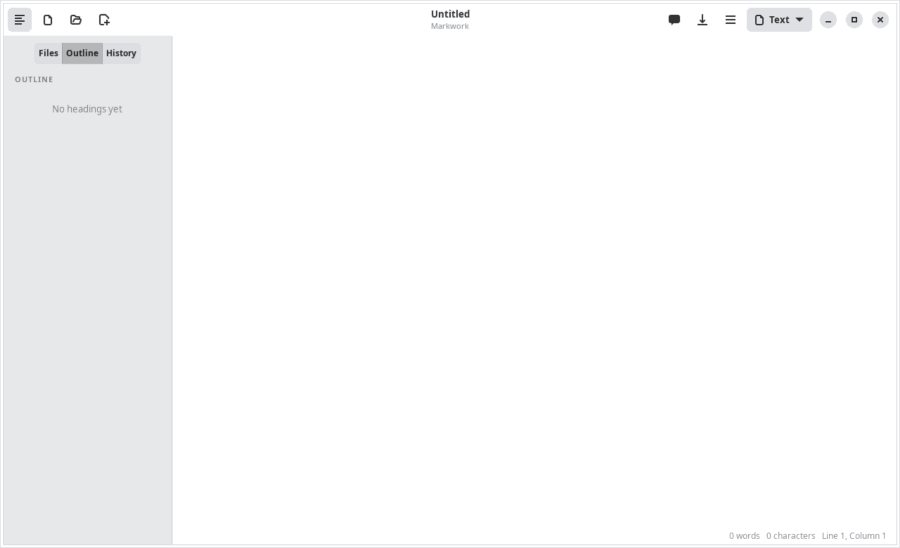
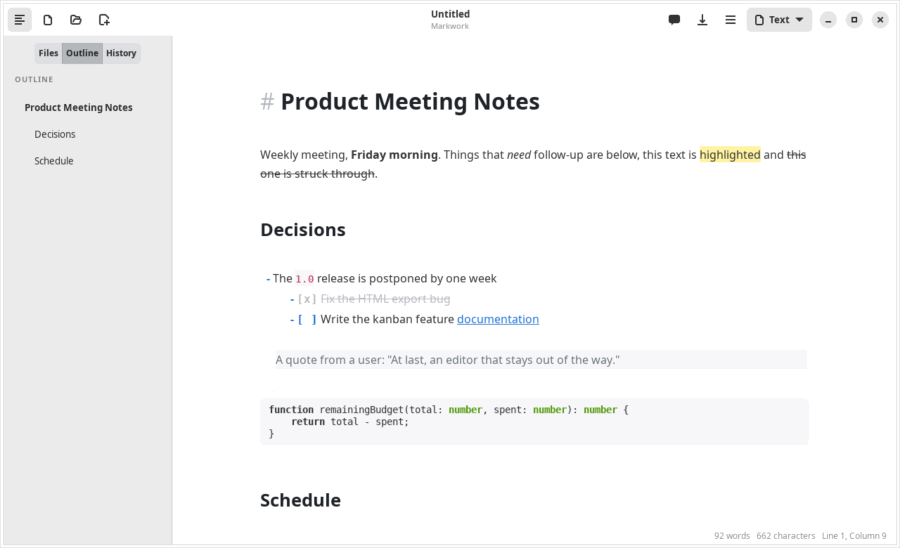
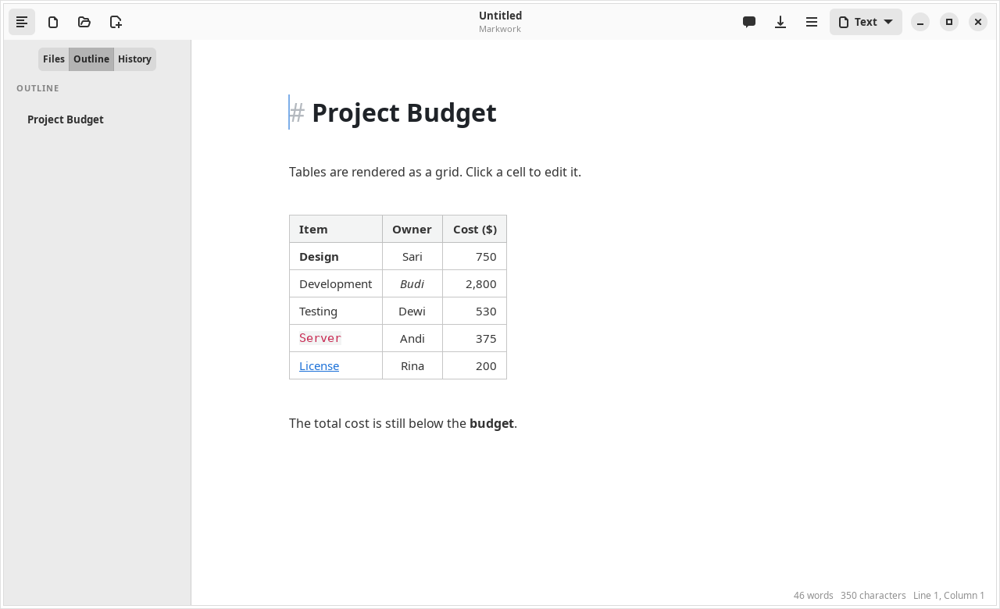
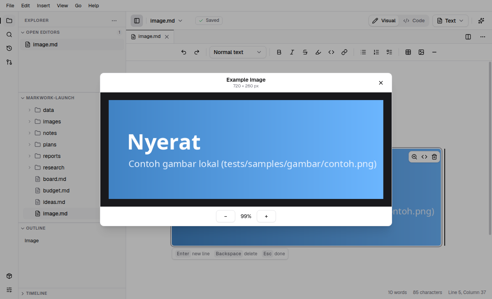

Workspace
The Markdown editor
There is no separate preview panel. The text is shown formatted right away: in the visual editor, the way it looks everywhere; in the live view, with its syntax on the line where the cursor is. Markdown in the header bar shows the file exactly as it is written. The file is plain Markdown in every case.

On startup without command-line arguments, Markwork restores the last folder and its saved file tabs, including their order, active tab, and cursor positions. Saved tabs outside that work folder are skipped; if none remain, the normal Home or empty-document startup applies. Without a work folder, standalone file tabs can still be restored. Files that no longer exist are skipped, and unsaved documents are not restored.
Short notices such as Saved appear at the bottom of the window. Use the close button at the upper right of a notice to dismiss it.
The visual editor
For someone who does not know Markdown, or does not want to see it. It is on at first; the Visual / Markdown switch in the header bar (Ctrl+Shift+M, or Preferences → General → Visual editor) changes it for every document (Markdown is the file as it is written: all the syntax, in a fixed-width font, with no grid, picture, or diagram, and Ctrl+/ does the same); in a narrow window the switch makes room for the title, and the layout menu's Visual Editor does the same. What is written to the file is the same Markdown in each: Git, the Assistant, and other apps read it as before.
- No syntax, even on the cursor line.
#,**,[[ ]], and a link's address stay hidden; a list item starts with a bullet and a task with a checkbox you click. - The toolbar over the text: undo and redo, the text style (normal text, headings 1–3, quote, code block), bold, italic, strikethrough, inline code, link, the three lists (bulleted, numbered, to-do), and table, image, and divider. A button is pressed when the text at the cursor, or all of the selection, has that format, and pressing it then takes the format off (from part of a bold word too: the rest stays bold). With the cursor in a table, the last group adds and deletes rows and columns.
- The selection menu. Select text and a small menu appears over it: bold, italic, strikethrough, code, link, and Ask, which opens the Assistant with the selection in its context.
- The / menu. Type / at the start of a line or after a space to choose a block: text, headings, lists, quote, table, image, code block, divider, or link. Typing after the slash narrows the list (
/todo), Enter takes the one chosen, Esc leaves the slash as it is. - Blocks have a handle. Point at a paragraph, heading, list, quote, table, or code block and −, +, and a grip appear in a reserved margin to its left, clear of the text even in a narrow pane. − removes the block (Undo restores it). + adds an empty block after it and opens the / menu there; dragging the grip moves the whole block (a line shows where it will land, and the page scrolls near its top and bottom edge; Esc cancels). From the keyboard, Ctrl+Shift+↑ / ↓ move the block the cursor is in. A move is one undo step, and the blank lines between blocks stay where they were.
- Tables are edited in the grid. A table stays a grid; click a cell and type. A cell shows its text as the text around the table does, formatted and without markers, while you type in it too; select some of it and bold, italic, strikethrough, code, and link work there as they do outside a table (the toolbar, the selection menu, and the shortcuts), and pressing one again takes it off. Tab and Shift+Tab move between cells and Tab in the last cell adds a row; Enter and the arrows ↑/↓ go to the cell below or above; Esc (or an arrow past the table) goes back to the text. With the cursor in a table the toolbar shows Add Row Below, Add Column to the Right, Delete Row, and Delete Column. What is typed changes only that cell of the text.
- Keys that act on what you see. Home goes to where the text of a heading or list item starts; Backspace there turns it back into a paragraph; Backspace and Delete next to a hidden
**remove the letter beside it, not the marker. - Markdown still works.
#,-,1.,[ ], and>at the start of a line, and**bold**typed out, become what they mean as soon as they are complete; the shortcuts below are the same in both editors.
Every kind of document has the switch. For a board, a list or inbox, a table, a calendar, a timeline, a gallery, a chart, or a CSV file, Visual is the document drawn that way and Markdown is its text, as it is written, frontmatter and all. The layout menu next to it still picks which layout Visual shows.
A code block shows its fences while the cursor is in it, and in the live view a table shows its text while the cursor is in it (see Limitations).
Live formatting
- Headings, bold, italic, strikethrough (
~~), highlight (==), inline code, links, and images are formatted right away. - In the live view (Preferences → General → Visual editor off, then leave source mode), syntax such as
**,==, or[]()appears again when the cursor enters its line. - Nested quotes
>>are indented further, up to three levels. - Links are opened with Ctrl+click; relative paths are computed from the folder of the file, and links to Markdown files open in a Markwork tab.

Links between documents [[ ]]
As in Obsidian, notes are linked to each other by name, without writing a path.
| Write | Result |
|---|---|
[[Daily Notes]] | A link to Daily Notes.md in any subfolder of the work folder |
[[Daily Notes|yesterday]] | Shown as “yesterday” |
[[Plan#Budget]] | Opens Plan.md and then jumps to the heading “Budget” |
[[#Budget]] | Jumps to a heading in the same document |
[[archive/Plan]] | Picks a specific file when several have the same name |
- On other lines only the name (or the text after
|) is shown as a link; the brackets appear again when the cursor enters that line. - Ctrl+click opens the note in a tab. Names are matched without the extension and without distinguishing upper and lower case; with duplicate names, the file in the same folder as the source document is used, then the one with the shortest path.
- A note that does not exist yet is opened as an empty document next to the source document. The file is only created when it is saved, so a mistaken click leaves no empty file.
- Typing
[[shows file name suggestions. ↑/↓ choose, Enter or Tab inserts the name together with]], Esc closes the suggestions. - HTML export writes
[[Name]]as a link toName.md.
Lists and tasks
- Enter continues a list, a numbered list, a task list, and a quote; Enter on an empty item ends it.
- Tab / Shift+Tab set the indentation of an item.
- A
- [ ]box can be checked with a click (a checkbox in the visual editor). - The toolbar, the / menu, and their shortcuts turn a line into another kind of list or into a heading: its prefix is replaced, so a bulleted item becomes a numbered one rather than both.
Tables as a grid
A table is drawn with cell lines, a bold header, and left/center/right alignment. When the cursor enters it, its raw text appears for editing; click a cell to edit that cell right away.
- Tab / Shift+Tab move between cells; in the last cell, Tab adds a row.
- Enter moves to the next row; on the last empty row, it leaves the table.
- The ☰ menu → Edit Table adds/deletes rows and columns, sets the alignment, and tidies the columns (Ctrl+Shift+T).
- A table that is wider than the text column is narrowed, and cut-off text is given “…” with the full contents as a tooltip.

Colored code blocks
The contents of a code block are colored according to its language (```js, ```python, ```rust, and hundreds of other languages from GtkSourceView), with a color scheme that follows light or dark mode.
Images and zoom
An image  is shown below its line, from a local file or the internet. A double click (or the ☰ menu → Zoom Image) opens the viewer: the mouse wheel zooms at the pointer, +/−, 0 for 100%, F to fit the screen, drag to pan, Esc closes.

View modes
| Mode | Function | Shortcut |
|---|---|---|
| Visual / Markdown | Edit the text as it looks, or with its syntax on the cursor line | Ctrl+Shift+M |
| Focus | Dim paragraphs other than the one being edited | F8 |
| Typewriter | The active line is always in the middle of the screen | F9 |
| Markdown (source) | The file as it is written: all the syntax in a fixed-width font; images, table grids, and diagrams are hidden | Ctrl+/ |
| Dark | Automatically follows the system theme the first time it is opened | Ctrl+Shift+D |
Panes (split editor)
The editor can be split into panes side by side or one above the other, as in VS Code. Each pane has its own tabs, its own Visual / Markdown switch, and its own formatting toolbar, so the same file can be Visual on the left and Markdown on the right. With a single pane, the editor looks as it always did.
- Split with the button in the header or in a pane's bar, the pane's ⋯ menu, a tab's right-click menu, Ctrl+Alt+\ (to the right) and Ctrl+Alt+Shift+\ (down). The document of the pane opens in the new pane too.
- Drag a tab to the edge of a pane to make a new pane there (the area that would be taken is marked before you let go), onto the middle or the tab bar of another pane to move it there, or within its bar to reorder it. Drag a file from the Files view the same way to open it in a pane.
- One document in two panes is one document. A change in one pane is in the other at once, and there is one Saved / Unsaved state. Undo is per pane. Closing a tab in one pane keeps the document while another pane shows it.
- The pane that has the focus (marked on top) is the active one: the header, the status bar, the commands, and the Assistant's context follow it. Ctrl+Tab moves between the tabs of that pane.
- The ⋯ menu also has Move Tab to Next Pane, Join All Panes (every tab in one pane), and Close Pane (its tabs join the pane before it). The line between two panes is dragged to resize them, and none gets smaller than a quarter of an equal share.
Saving and exporting
- Autosave (on by default): a document that already has a file is saved 1 second after you stop typing, in the background so that it does not hold up typing.
- A warning appears before closing if there are unsaved changes.
- HTML export (Ctrl+Shift+E): one standalone HTML file with CSS. Diagrams in the exported file load Mermaid from a CDN.
Reporting a problem with the editor
When a key does something you did not expect (a letter that would not go away, a star that appeared, a line that joined another), Help → Report a Problem with the Editor… saves what the editor just did as a file, so whoever fixes Markwork can play it back. Right after you undo something you had just typed, a small Something looks wrong? link under the toolbar offers the same for a few seconds, once per tab.
- What happened is your own note: what you did and what you expected. It is saved as you write it.
- What the editor just did: the last 500 changes of the document (keys, clicks, and what each did), nothing typed in other windows. Without it, the report holds the text as it is now.
- Blur my text (on at first): every letter becomes
xorXand every digit0, while the Markdown, the spaces, the punctuation, emoji, and letters of other scripts (Arabic, Chinese, Cyrillic, …) stay, which is what a bug of the editor needs. The line of the cursor shows how it will be saved. A link keeps itshttps://, a field its name, a code block its language; the words of a link's address and of a note link are blurred too. - A picture of the editor: the editor as it is on screen, blurred the same way when the text is.
The report is a .mwrepro.json file (and a .png beside it) in the reports folder of Markwork's data folder, not in your work folder, so it is never committed with your notes. Show File opens that folder. Nothing is sent anywhere: attach the file to a bug report yourself.